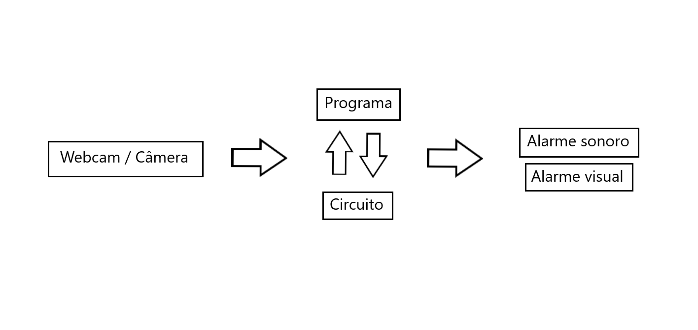

Introdução
A parte 2 do projeto consiste na Modelagem Funcional do Sistema de Processamento Visual, onde o CENÁRIO do trabalho será detalhado quanto à concepção funcional do programa, prevendo seu uso no desenvolvimento do sistema.
Objetivos
- * Aplicar uma quantidade de conceitos de processamento de vídeo da disciplina.
- * Executar a aplicação com cenas pré-gravadas, para testes e gravação de “demo”.
- * Executar a aplicação com captura de vídeo em tempo real, mostrando na tela.
- * Específico: ampliar e detalhar o cenário de aplicação do projeto.
Detalhamento do cenário de aplicação
Princípio
Inicialmente, o projeto será desenvolvido em laboratório com auxilio de uma webcam e de um computador com Ubuntu, OpenCV e Python, onde o programa será confeccionado e testado, emitindo prints de validação e saídas de vídeo (gravações). Após isso, o programa será implementado em um circuito com Arduino que imitará um dispositivo real onde o programa rodaría. O arduíno servirá também como ponte para as saídas sonoras e luminosas, que serão acionadas ao se detectar movimento nas imagens.
Fluxograma do programa

Entrada
Para fins de desenvolvimento do programa, a entrada deste consistirá dos frames provenientes da Webcam disponível no laboratório. Idealmente, a entrada do programa será as imagens de alguma câmera de segurança. De qualquer forma, as imagens provenientes de webcam ou da câmera serão transferidos e utilizados pelo programa para processamento das imagens.
Saídas
O programa irá gerar duas saídas de vídeo, uma para o período diurno e um para o noturno. Na prática, essas duas saídas seriam apenas uma, onde o programa definirá, a partir do horário do sistema, qual das saídas disponibilizar para o usuário. A saída do perído diurno consistirá de um filtro bilateral, processamento de cor e detecção de movimento. A saída do perído noturno consistirá da equalização, para aumentar o contraste, já que a visibilidade durante esse período é reduzida, e da detecção de movimentos. Além das saídas de vídeo, o programa ativará também as saídas sonoras e/ou auditivas através do arduíno.
Filtro bilateral
O filtro bilateral estudado nos laboratórios será utilizado para reduzir os ruídos das imagens e suavizá-las, tornando-as mais nítidas para possibilitar uma melhor análise caso necessário.
Processamento de cor
O processamento de cor será utilizado no período diurno, onde as cores são mais aparentes, para focar na cor de pele possíveis pessoas cujo movimento for detectado. A ideia é que esse mecanismo possa ser acionado a qualquer momento a partir do pressionar de uma tecla ou botão.
Detecção de movimento
A parte principal do projeto consiste na aplicação prática da detecção de movimento, que será aplicado em ambas as saídas do programa a fim de detectar possiveis atividades suspeitas e alertar os usuários.
Equalização
A equalização será utilizada na saída noturna do programa para aumentar o contraste das imagens, já que estas apresentarão muitos pixeis pretos que dificultarão a análise das imagens. Durante o desenvolvimento, a aplicação será testada em um ambiente mais escuro, onde serão providenciados materiais para a realização do mesmo.
Materiais
- 1. Ubuntu
- 2. Miniconda
- 3. Python
- 4. OpenCV
- 5. Webcam
- 6. Arduino
- 7. Placa de circuito
- 8. Cabos e leds